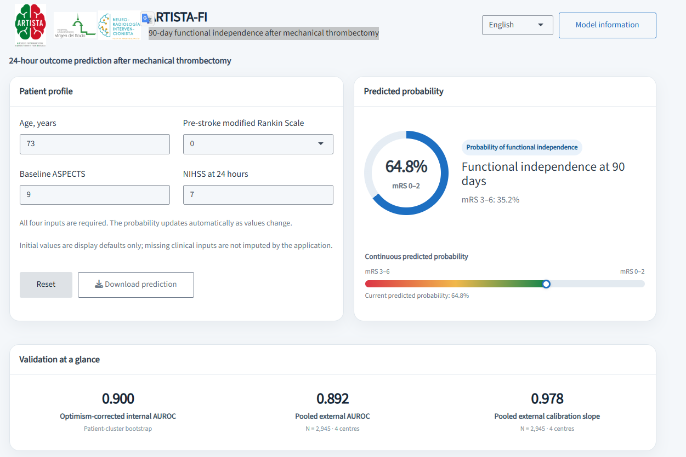
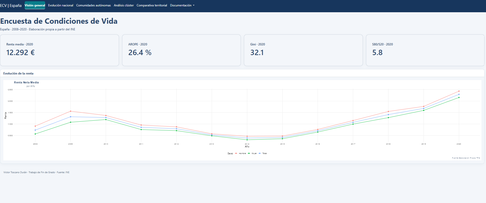

01⌁
Machine Learning
& Deep Learning
Predictive modelling, neural architectures and data-driven methods for structured, tabular and image data.
I'm Víctor Toscano Durán, a Data & AI Engineer with a background in Statistics. I work at the intersection of data analysis, machine learning and real-world applications — particularly in healthcare.
From statistical foundations to intelligent systems — combining rigorous analysis, computational methods and practical engineering to solve complex problems.
I am a statistician specialised in Artificial Intelligence, currently working as Lead Data Scientist in the Neurovascular Research Group. My work brings together statistical analysis, machine learning and deep learning to support research in stroke and healthcare.
I have over four years of experience working with data, communicating insights through dashboards and data visualisations, and developing and implementing artificial intelligence models.
My research path has also taken me into computational topology, explainable AI and energy-aware machine learning. As part of my research career, I have completed two international research stays at leading European research institutions: one at the National Research Council of Italy (CNR), working with Dr Maurizio Mongelli, and another at the AIDOS Lab, working with Prof. Dr Bastian Rieck.
I enjoy moving between theory and implementation: understanding the structure behind data, building models, communicating results and turning methods into usable applications.
I hold a Bachelor's Degree in Statistics and a Master's Degree in Logic, Computation and Artificial Intelligence, both from the University of Seville.
Connecting mathematical ideas, machine learning methods and applications with real impact.
Predictive modelling, neural architectures and data-driven methods for structured, tabular and image data.
Persistent entropy, Euler Characteristic Transforms and topological representations for learning and data analysis.
Interpretable models, reliability assessment and safety regions for complex decision systems.
Applying statistical learning and AI to clinical research and computational healthcare.
From data preparation and analysis to interactive dashboards, research applications and deployment.
From research to real-world applications. A selection of publicly available projects across data science, statistics and artificial intelligence.

↗An interactive web application that uses a machine learning model to estimate the probability of functional independence 90 days after mechanical thrombectomy, based on patient clinical characteristics.
The application provides a user-friendly interface for generating individualised predictions, bridging the gap between predictive modelling and clinical research.

An interactive data analytics application for exploring living conditions, poverty and income inequality in Spain between 2008 and 2020, using official data from the Spanish National Statistics Institute (INE).
Independently developed as part of my Bachelor's Thesis in Statistics, covering the entire data lifecycle: data extraction, transformation and preparation, statistical analysis, interactive visualisation and web application development.
The platform integrates temporal analysis, interactive geographical maps, clustering, territorial comparisons and socioeconomic inequality indicators.
A selection of peer-reviewed work, conference contributions and preprints. See my academic profiles for the complete record.
V. Toscano-Duran et al. · European Stroke Journal, 11(Supplement 1), i647–i648.
V. Toscano-Duran, F. Rottach & B. Rieck · pp. 391–405.
V. Toscano-Duran et al. · Springer Nature Switzerland, pp. 396–421.
V. Toscano-Duran, R. Gonzalez-Diaz & M. Á. Gutierrez-Naranjo.
J. Perera-Lago, V. Toscano-Duran et al. · Open Research Europe, 5:200.
J. Perera-Lago, V. Toscano-Duran et al. · Open Research Europe, 4:101.
Research, industry and academic training — building a multidisciplinary perspective on data and AI.
Working at the intersection of data analysis and machine learning applied to stroke. Statistical analysis, reports and visualisations for medical teams, application and dashboard development, and training, validation and deployment of ML and deep learning models.
Worked on machine learning, energy optimisation and applied topology within the European REXASI-PRO project. Reduced training data volume by 75% while maintaining accuracy; developed topological metrics for dataset representativeness and persistent-entropy-based analysis of robot fleets and explainable safety regions.
Collaboration with Prof. Dr. Bastian Rieck on topological tools in medical computing. Developed an Euler Characteristic Transform-based molecular descriptor for molecular learning tasks.
Collaboration with Dr. Maurizio Mongelli and his team on topology and explainable AI, developing approaches to define efficient safety regions for safe and unsafe simulations.
Developed and validated deep learning models (RNN, CNN and Transformers) for blood glucose prediction, alongside data preprocessing, visualisation and SQL-based ETL.
Supported clinical data analysis through statistical techniques, reports and visualisations for medical teams.
University of Seville
University of Seville
SLMath · Berkeley, California
Centre de Recerca Matemàtica · Barcelona
A practical stack shaped by research, modelling and application development.
Containerisation and self-hosted deployment are part of the engineering direction of this portfolio. Add links to concrete deployments as you publish them.
Sharing research through conferences, seminars and academic supervision.
Poster presentation on topological molecular representations based on the Euler Characteristic Transform.
Conference poster on molecular machine learning and a talk on interpolation and function approximation using neural networks and barycentric coordinates.
Seminar: Topological Data Analysis for data analysis and AI in robotics.
Oral presentation and doctoral consortium poster on reliable decision trees and unseen vehicle collision data.
4 Co-directed final degree & master projects in medical imaging, radiomics, oncology and machine learning, with marks between 9.0 and 9.5.
Fundamentals of Accelerated Data Science · Fundamentals of Deep Learning.
I'm always happy to connect with researchers, practitioners and people working on interesting problems in data science and AI.
Get in touch ↗